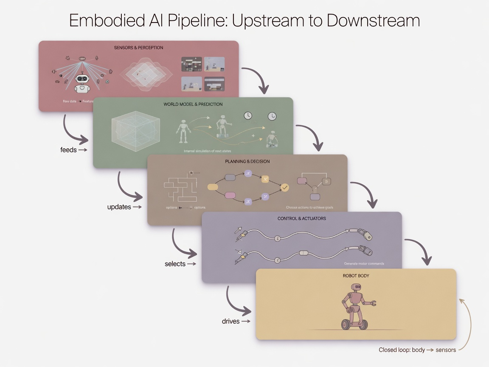
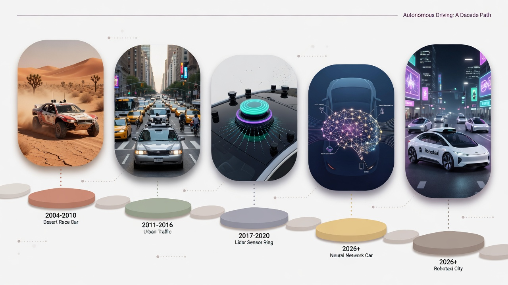
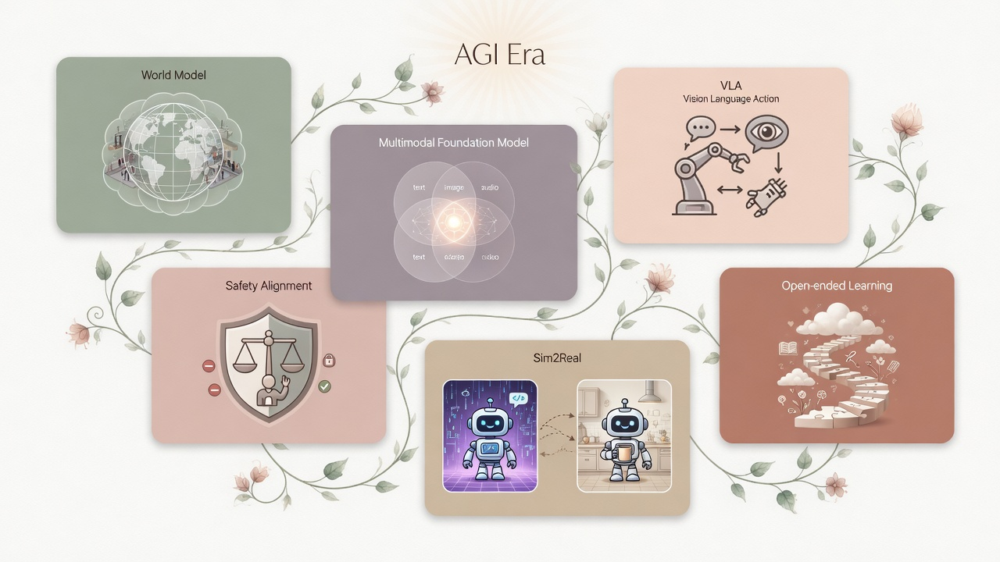

A. 具身智能是什么
具身智能（Embodied AI / Embodied Intelligence）强调：智能体通过身体与环境交互——用传感器感知、用执行器行动，在反馈中学习。不是只在文本里「说」，还要在物理世界里「做」。
无人车、扫地机、仓储机器人、人形机器人、无人机，都在走这条线。你坐的 Robotaxi 试验服务，本质是「车轮上的具身智能」。
聊天模型 = 大脑在房间里答题；具身系统 = 大脑必须边走边看边刹车。出错代价从「说错话」变成「撞到东西」。
纯 LLM 像书斋里的谋士；具身智能像必须下场踢球的球员——规则、体力、现场噪音全要扛。 哲学与认知科学上，「身体经验塑造认知」可追溯到具身认知传统；机器人学里 Brooks 的包容架构（subsumption）强调与环境紧密耦合的行为层（1980s）。
近年综述（如 arXiv:2402.02385《A Survey on Robotics with Foundation Models》、清华相关综述 Embodied AI: From LLMs to World Models）把具身进展概括为： 经典规划/控制 → 深度学习感知 → 大模型/多模态/世界模型驱动的通用机器人能力。
B. 上下游顺序：一辆车/一个机器人怎么「活」
无论无人驾驶还是机械臂，工程上常可粗分为同一条能力链（具体产品会合并模块）：

1. 感知 Perception
相机、激光雷达、毫米波雷达、IMU… 回答「周围有什么、在哪」
2. 理解与预测
检测跟踪、占用栅格、轨迹预测；进阶用「世界模型」想象下一步
3. 规划 Planning
全局路线 + 局部轨迹：往哪开、怎么绕开障碍
4. 控制 Control
油门/刹车/转向或关节力矩：把轨迹变成可执行指令
5. 身体 + 环境反馈
车轮/手臂动了，世界变了，传感器再读——闭环
和软件 Agent 对照（结构意识）
软件 Agent：LLM + Tool + Loop。
具身 Agent：感知 +（世界模型）+ 规划 + 控制 + 物理 Loop。
共同难点：长尾场景、安全急停、可观测与评测。详见 Loop 工程。
C. 具身相关时间线（真实节点）
不背全部年份，抓住「范式切换」：规则/经典规划 → 学习驾驶 → 竞赛验证 → 商业 Robotaxi → 机器人基座模型。
从符号规划到「贴地」行为
Brooks 提出包容架构，强调分层反应式控制、与传感器闭环。 CMU Navlab 等项目把计算与传感器搬上真实车辆做导航实验（Mobileye 等机构整理的 AV 史亦引用这一脉络）。
ALVINN：神经网络端到端跟车
Dean Pomerleau 的 ALVINN（Autonomous Land Vehicle In a Neural Network，NIPS 1988 / CMU 1989）用多层网络把相机等输入映射为方向输出，在 CMU NAVLAB 上做道路跟随。 这是「用学习替代纯手写规则开车」的经典论文节点。 论文：NIPS 1988 ALVINN
No Hands Across America
CMU Navlab 5 完成匹兹堡到圣地亚哥长距离行程，转向自主比例极高（公开史述常引约 98% 转向自主），油门刹车仍由人负责——展示「高速路跟驰/车道保持」可行性。
从「没人跑完」到城市挑战
2004 DARPA Grand Challenge：沙漠越野，无车完成。
2005 五车完赛，Stanford Stanley 夺冠。
2007 Urban Challenge：城市场景，CMU 等获胜。激光雷达等传感路线被广泛验证。
官方：DARPA Grand Challenge
· 复盘：IEEE Spectrum
Google 自动驾驶项目 → Waymo；SAE 等级
Google 启动自驾项目（后独立为 Waymo）。 SAE J3016（2014 首版，后修订）定义 L0–L5 驾驶自动化等级，成为全球沟通标准。
量产 ADAS / Autopilot 进入消费市场
各车企与供应商推进 L1–L2 级辅助（自适应巡航、车道保持等）。 注意：营销用语 ≠ SAE 等级；L2 仍要求人类随时接管。
限定区域内的无人车服务
Waymo One 等在特定城市/运营设计域（ODD）推出面向公众的自动驾驶网约服务（公司官方时间线记载 Phoenix 等里程碑）。 中国亦有多家 Robotaxi 试点。共性：限定区域 + 高安全冗余 + 持续运营数据。
SayCan、PaLM-E、RT-2、OpenVLA…
Google 等提出 SayCan（语言模型接地到机器人可执行技能）、
PaLM-E（具身多模态语言模型）、
RT-2（Vision-Language-Action）。
开源侧出现 OpenVLA（约 7B 参数）等，推动「通用操作」研究。
SayCan 论文 ·
SayCan 代码 ·
PaLM-E ·
RT-2 ·
OpenVLA 论文 ·
OpenVLA GitHub
D. 切入点：无人驾驶「关键十年」怎么读

| 阶段 | 大约时间 | 关键事实（可查证） | 对应具身知识点 |
|---|---|---|---|
| 证明可行 | 2004–2007 | DARPA Grand / Urban Challenge | 传感融合、规划、真实环境闭环 |
| 产业成型 | 2009–2016 | Google→Waymo；SAE J3016（2014） | ODD、安全冗余、等级语言 |
| 消费辅助 | 2015 前后起 | L1–L2 ADAS 大规模上车 | 人机共驾、接管责任 |
| 运营服务 | 2018 起 | Waymo One 等 Robotaxi 公开服务 | 车队运维、远程协助、长尾场景 |
| 学习范式 | 2010s–2020s | 模块化栈 vs 端到端/大模型增强（业界路线并行） | 模仿学习、数据闭环、仿真 |
无人驾驶教会具身智能的 5 课
- ODD（运营设计域）：先在限定天气/区域/速度内可靠，再谈扩展——不是一步 L5。
- 长尾（Long tail）：罕见场景决定安全上限；数据与仿真要专门打长尾。
- 感知不是目的，闭环才是：看懂了却刹不住 = 失败。
- 人机权责：L2 与 L4 法律责任与用户心智完全不同（见 SAE）。
- 评测与运维是产品：上线后的监控、远程接管、事件复盘，和模型精度同等重要。
E. SAE 驾驶自动化等级（标准语言）
来源：SAE J3016（2014 提出，后与 ISO 协作修订）。从 L0 到 L5：
你可以怎么用这个标准
看车广告时问：它按 SAE 是 L几？是否要求手扶方向盘？是否限定高速/城市？别被「自动驾驶」四字带偏。
F. 通向更强智能时：还可能高频出现的概念
以下不是科幻清单，而是已在论文、开源或产业路线中反复出现、并与具身/通用智能讨论强相关的概念。 「AGI 时代」这里指：系统在多样任务与环境中更通用、更少为单一场景重写规则——是否达到严格 AGI 定义，学界仍有争议。

结构收束：若 AGI 讨论落到工程，具身侧更可能是 「多模态世界模型 + 可接地技能 + 仿真与真机数据闭环 + 严格 ODD/安全案例」， 而不是单独一个无限聊天窗口。
G. 和你有什么关系 · 你可以怎么用
理解 L2 与 L4 差别；坐 Robotaxi 时知道 ODD 与远程协助；对「全自动驾驶已普及」类话术保持核查习惯。
路径可参考：机器人感知（检测/SLAM 基础）→ 控制入门 → 强化学习/模仿学习 → 跟读 RT-2、OpenVLA、Dreamer 等开源与论文。
先定义 ODD 与失败模式，再谈模型；优先可中断、可复盘的闭环。软件 Agent 经验（评测、护栏）可迁移到具身，但必须加物理安全层。
H. 论文 · 标准 · GitHub（可点击跳转）
下列链接均为公开可访问的论文页、官方站点或 GitHub 仓库，点击即可打开原文。 产业节点变化快时，以监管与公司最新公告为准。
论文（arXiv / 会议）
Pomerleau, NIPS 1988. 学习型自动驾驶早期代表。
https://proceedings.neurips.cc/paper/1988/hash/812b4ba287f5ee0bc9d43bbf5bbe87fb-Abstract.htmlAhn et al., arXiv:2204.01691. Do As I Can, Not As I Say.
https://arxiv.org/abs/2204.01691 · 项目主页Driess et al., arXiv:2303.03378.
https://arxiv.org/abs/2303.03378Brohan et al., arXiv:2307.15818. 将 VLM 能力迁移到机器人控制。
https://arxiv.org/abs/2307.15818Kim et al., arXiv:2406.09246. 开源视觉-语言-动作模型。
https://arxiv.org/abs/2406.09246 · 项目主页Xu et al., arXiv:2402.02385. 机器人与基座模型综览。
https://arxiv.org/abs/2402.02385Ha & Schmidhuber, arXiv:1803.10122. 世界模型经典论文。
https://arxiv.org/abs/1803.10122Vaswani et al., arXiv:1706.03762. 现代 LLM 架构基础。
https://arxiv.org/abs/1706.03762GitHub 开源项目
开源 VLA 训练与推理代码。
https://github.com/openvla/openvlaSayCan 桌面仿真开源实现（官方仓库子目录）。
https://github.com/google-research/google-research/tree/master/saycan具身智能训练与评测高层库（Habitat）。
https://github.com/facebookresearch/habitat-labDreamerV3 世界模型强化学习官方实现。
https://github.com/danijar/dreamerv3具身智能论文与资源列表（社区维护，便于继续深挖）。
https://github.com/HCPLab-SYSU/Embodied_AI_Paper_List软件侧有状态 Agent / 工作流编排（与具身「规划循环」对照读）。
https://github.com/langchain-ai/langgraph开源 LLM 应用平台（RAG / Agent / Workflow 低代码）。
https://github.com/langgenius/dify标准 · 官方 · 赛事
L0–L5 行业标准定义与说明（SAE 官方）。
https://www.sae.org/standards/content/j3016_202104/ · 等级说明博文2004/2005 等赛事官方介绍页。
https://www.darpa.mil/about/innovation-timeline/grand-challengeStanley 夺冠与产业影响的权威科技媒体复盘。
https://spectrum.ieee.org/darpa-grand-challengeRobotaxi 商业化与技术演进的公司官方入口。
https://waymo.com/about/具身智能年度研讨与挑战赛门户。
https://embodied-ai.org/